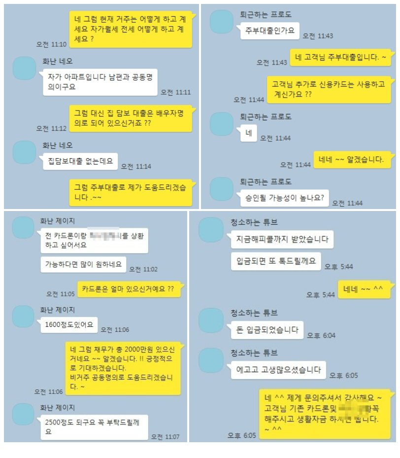

아파트 공동소유 주부고객님... 무설정 아파트론 5100만원 승인사례!!
안녕하세요 ^^ 뱅크앤론 김한수 상담사입니다. 다들 주말은 잘 보내셨나요 ?
오늘은 주부조건 아파트 무설정 대출 사례를 안내해 드리겠습니다. 고객님께서는 소득이 일정치 않은 프리랜서 직장인및 주부인 고객입니다.
기대출로는 카드론및 4금융권 해서 2000만원 있었습니다.
고객님은 혼자서 4금융권을 알아보셨지만 소득을 보는 4금융에서는 부결되셔서 뱅크앤론을 통해 대출문의를 주셨습니다.
고객님의 직장 재직 그리고 소유하고 있는 자동차및 현재 거주는 어떻게 하고 계신지 문의 한 결과
배우자분과 공동명의 자가 아파트를 소유하고 있었습니다.
다만 현재 고객님께서는 등본거주지와 실거주지가 다르셔서 할 수 있는 금융사가 제한적이였습니다.
여러군데 금융사 통해 조회를 해본결과 금융사에서 5100만원 승인됐습니다.
아래는 저와 고객님의 카톡상담 내용 일부를 캡쳐한것이오니 참고하셔서 많은 도움 됐으면 합니다.
글을 읽고 대출이 필요하실때는 뱅크앤론을 통해 대출문의를 주시면 전문상담사분들이 있으니 언제든지 도움이 필요할때 상담신청 남겨주시면 도움드리겠습니다.
